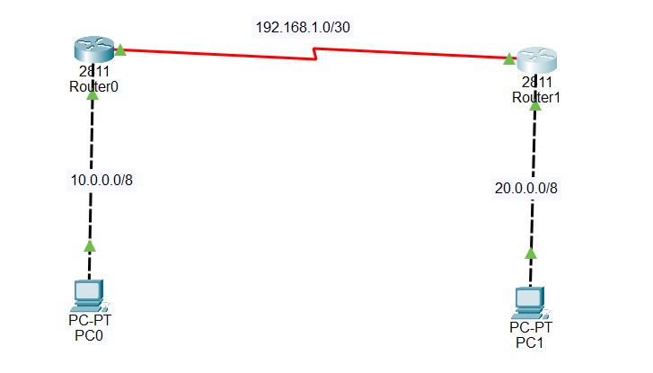

CHAP (Challenge-Handshake Authentication Protocol) is a PPP authentication method used to verify the identity
of a remote device.
Example:
Router-1(config)# username R2 password sohel
Router-2(config)# username R1 password sohel
PAP (Password Authentication Protocol) is a simple PPP authentication protocol that uses a username and password.

Router0 Interface up:
Router(config)#int f 0/0
Router(config-if)#ip add 10.0.0.1 255.0.0.0
Router(config-if)#no sh
Router(config-if)#
%LINK-5-CHANGED: Interface FastEthernet0/0, changed state to up
%LINEPROTO-5-UPDOWN: Line protocol on Interface FastEthernet0/0, changed state to up
Router(config-if)#exit
Router(config)#int s 0/0/0
Router(config-if)#ip add 192.168.1.1 255.255.255.252
Router(config-if)#no sh
Router(config-if)#exit
Router0 RIP:
Router(config)#router rip
Router(config-router)#version 2
Router(config-router)#no auto-summary
Router(config-router)#network 10.0.0.0
Router(config-router)#network 192.168.1.0
Router1 Interface up:
Router(config)#int s 0/0/0
Router(config-if)#ip add 192.168.1.2 255.255.255.252
Router(config-if)#no sh
Router(config-if)#
%LINK-5-CHANGED: Interface Serial0/0/0, changed state to up
Router(config-if)#exit
Router(config)#
%LINEPROTO-5-UPDOWN: Line protocol on Interface Serial0/0/0, changed state to up
Router(config)#int f 0/0
Router(config-if)#ip add 20.0.0.1 255.0.0.0
Router(config-if)#no sh
Router(config-if)#
%LINK-5-CHANGED: Interface FastEthernet0/0, changed state to up
%LINEPROTO-5-UPDOWN: Line protocol on Interface FastEthernet0/0, changed state to up
Router(config-if)#exit
Router1 RIP:
Router(config)#router rip
Router(config-router)#version 2
Router(config-router)#no auto-summary
Router(config-router)#network 20.0.0.0
Router(config-router)#network 192.168.1.0
Router0:
Router(config)#hostname R1
R1(config)#username R2 password hadi
R1(config)#int s 0/0/0
R1(config-if)#encapsulation ppp
R1(config-if)#ppp authentication chap
R1(config-if)#no sh
R1(config-if)#exit
Router1:
Router(config)#hostname R2
R2(config)#username R1 password hadi
R2(config)#int s 0/0/0
R2(config-if)#encapsulation ppp
R2(config-if)#ppp authentication chap
R2(config-if)#no sh
R2(config-if)#exit
Verification:
R1#show int s 0/0/0
Serial0/0/0 is up, line protocol is up (connected)
Hardware is HD64570
Internet address is 192.168.1.1/30
MTU 1500 bytes, BW 1544 Kbit, DLY 20000 usec,
reliability 255/255, txload 1/255, rxload 1/255
Encapsulation PPP, loopback not set, keepalive not set
LCP Open
Open: IPCP, CDPCP
Last input never, output never, output hang never
Last clearing of "show interface" counters never
Input queue: 0/75/0 (size/max/drops); Total output drops: 0
Queueing strategy: weighted fair
Output queue: 0/1000/64/0 (size/max total/threshold/drops)
Conversations 0/0/256 (active/max active/max total)
Reserved Conversations 0/0 (allocated/max allocated)
Available Bandwidth 1158 kilobits/sec
5 minute input rate 15 bits/sec, 0 packets/sec
5 minute output rate 15 bits/sec, 0 packets/sec
63 packets input, 3276 bytes, 0 no buffer
Received 2 broadcasts, 0 runts, 0 giants, 0 throttles
0 input errors, 0 CRC, 0 frame, 0 overrun, 0 ignored, 0 abort
67 packets output, 3460 bytes, 0 underruns
R1#ping 192.168.1.2
Type escape sequence to abort.
Sending 5, 100-byte ICMP Echos to 192.168.1.2, timeout is 2 seconds:
!!!!!
Success rate is 100 percent (5/5), round-trip min/avg/max = 1/5/22 ms
Router1 (On the Receiving (Authenticator) Router):
R1(config)#int s 0/0/0
R1(config-if)#encapsulation ppp
R1(config-if)#ppp authentication pap
R1(config-if)#
%LINEPROTO-5-UPDOWN: Line protocol on Interface Serial0/0/0, changed state to down
%LINEPROTO-5-UPDOWN: Line protocol on Interface Serial0/0/0, changed state to up
Router2: (On the Calling Router):
R1(config)#int s 0/0/0
R1(config-if)#encapsulation ppp
R1(config-if)#ppp pap sent-username R1 password Hadi
R1(config-if)#
%LINEPROTO-5-UPDOWN: Line protocol on Interface Serial0/0/0, changed state to down
%LINEPROTO-5-UPDOWN: Line protocol on Interface Serial0/0/0, changed state to up
First, define the credentials in the global configuration.
Note that the username should match the hostname of the peer router (case-sensitive) for CHAP to work correctly
Router(config)# hostname [Local-Router-Name]
Router(config)# username [Peer-Router-Name] secret [Password]
CHAP is a secure, two-way authentication method that uses a three-way handshake
Router(config)# interface [interface_type] [interface_number]
Router(config-if)# encapsulation ppp
Router(config-if)# ppp authentication chap
Optional for CHAP: If the local router needs to use an alternate username to identify itself to the remote
router (rather than its default hostname), use this command in interface mode:
Router(config-if)# ppp chap hostname [custom-username]
PAP is a one-way, less secure clear-text authentication where the calling router sends its credentials to the receiving router
On the Receiving (Authenticator) Router:
Router(config)# interface [interface_type] [interface_number]
Router(config-if)# encapsulation ppp
Router(config-if)# ppp authentication pap
On the Calling Router:
Router(config)# interface [interface_type] [interface_number]
Router(config-if)# encapsulation ppp
Router(config-if)# ppp pap sent-username [Local-Router-Name] password [Password]
If you want to allow both methods (e.g., trying CHAP first, then falling back to PAP), configure the interface as follows
Router(config-if)# encapsulation ppp
Router(config-if)# ppp authentication chap pap